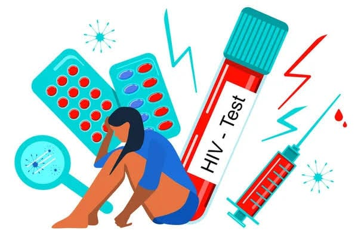

Rompamos los Prejuicios
Pon a prueba tus conocimientos respondiendo Verdadero o Falso.
1. ¿El VIH se transmite por un abrazo, un beso en la mejilla o dar la mano?
2. ¿Con el tratamiento adecuado una persona puede tener una vida normal?
3. ¿VIH y SIDA significan exactamente lo mismo?
4. ¿Si utilizo dos condones a la vez estoy el doble de protegido?
5. ¿El VIH afecta únicamente a personas homosexuales?
6. ¿Si una persona se ve completamente sana significa que no tiene VIH?
Apoyar, No Rechazar
El estigma y la discriminación aíslan, alejan a las personas de la atención médica y dañan su salud.

Uso correcto del lenguaje
❌ Evita términos ofensivos como "sidoso" o "enfermo de VIH".
✅ Lo correcto es: "persona que vive con VIH".
No hace falta separar cubiertos, platos, baños ni ropa. El virus no se transmite por el aire ni por objetos de uso cotidiano.
"Enterarme de mi diagnóstico fue duro por el miedo al rechazo. Cuando entendí qué es el TARGA, mi vida cambió: tomo mi pastilla todas las noches, trabajo con normalidad y mis controles médicos confirman que soy indetectable. El apoyo de mi familia fue mi mayor soporte."
— Testimonio ilustrativo (personaje ficticio creado para esta campaña)Preguntas Frecuentes (FAQs)
Respuestas rápidas basadas en información del MINSA y la OMS.
Si mi pareja tiene VIH y yo no, ¿podemos tener hijos sin VIH?
Sí, con acompañamiento médico. Una carga viral indetectable y las medidas de prevención indicadas por el equipo de salud permiten concebir y tener hijos sin la infección.
¿Puedo trabajar o estudiar con normalidad en el Perú?
Sí. Vivir con VIH no afecta tus capacidades intelectuales ni laborales, y la ley protege contra la discriminación.
¿La prueba y el diagnóstico son confidenciales?
Sí. En el Perú, la prueba y la historia clínica son confidenciales, y nadie puede revelar tu estado de salud sin tu autorización.
¿Cuánto tiempo vive una persona que sigue su tratamiento?
Con diagnóstico oportuno y tratamiento constante, la expectativa de vida es similar a la de la población general.
¿Dónde pedir ayuda o hacerte la prueba?
- Infosalud (MINSA): llama al 113, gratuito, para orientación y ubicar tu establecimiento de salud más cercano.
- En Cusco: acude a tu centro de salud o a hospitales como el Hospital Regional del Cusco o el Hospital Antonio Lorena, y pregunta por el servicio de ITS/VIH (consejería y prueba).
- DIRESA Cusco: puede indicarte el establecimiento con atención de VIH más cercano a tu distrito.
Confirma horarios y servicios disponibles antes de ir.